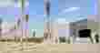

PRE GROUP · THE BROOKS
Construction Progress — October 2026
Club Residence phase · Official milestones transcribed from the supplied monthly construction update.

Project gate · photo from the October 2026 report (compressed preview)
Building-specific delivery timeline
Source and limitations
Derived from the 22-page “The Brooks Construction Progress Updates — Oct-26” supplied by the buyer. Delivery dates are estimates stated in that report, not guarantees. The report does not provide numerical completion percentages. This webpage is a text summary, not the original PDF.